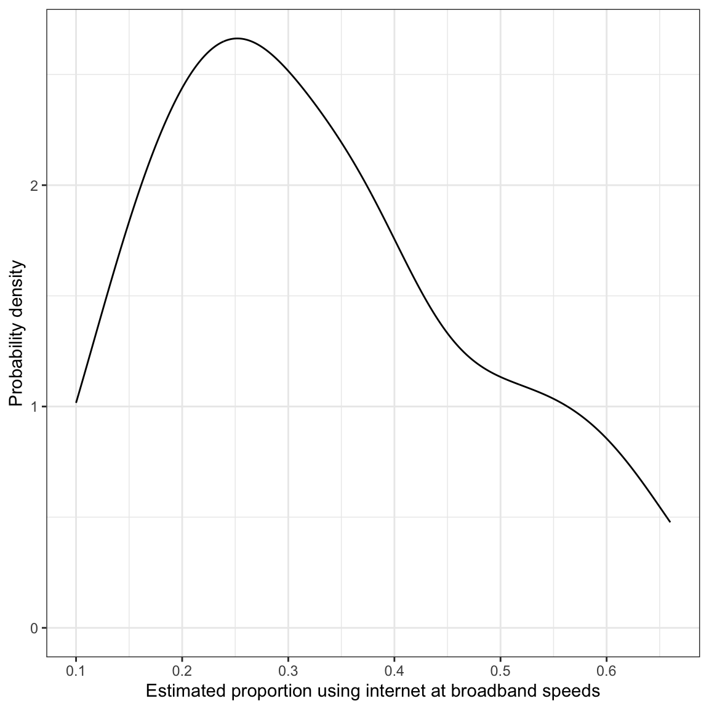
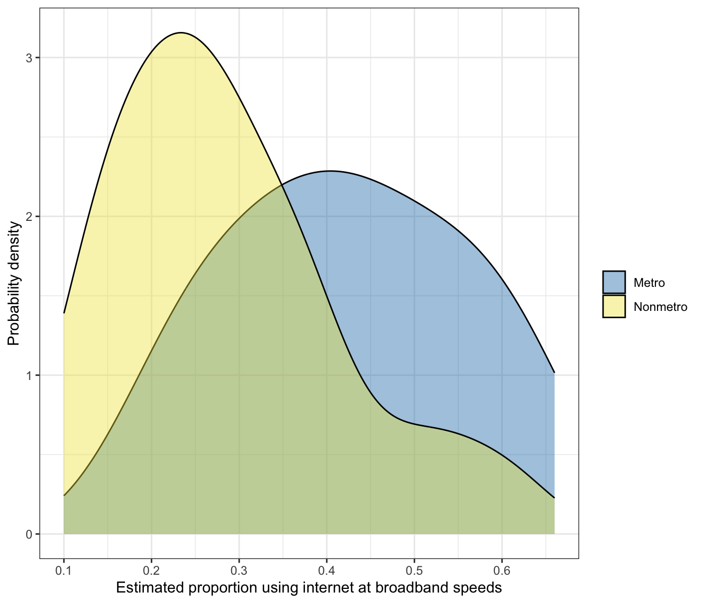
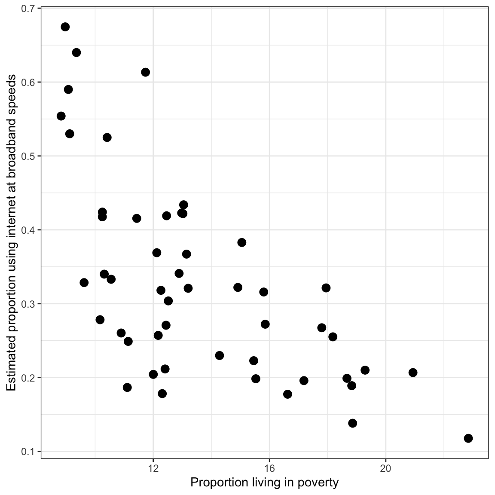
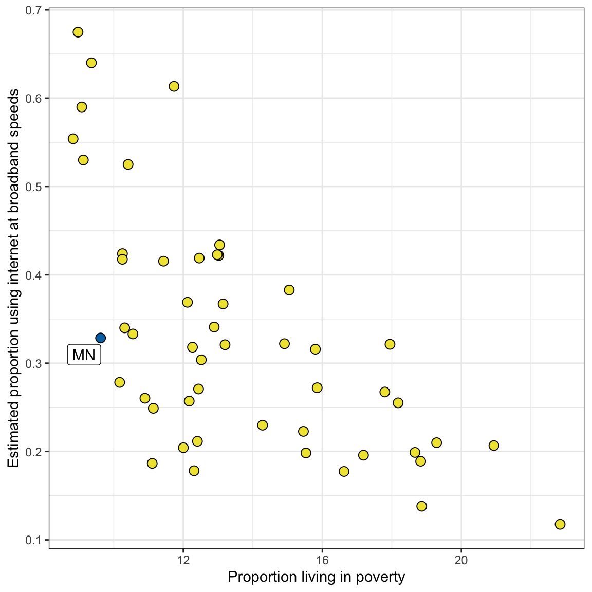

1. Use the geom_density() function from the {ggplot2} package to create a density plot of the distribution of the microsoft_useage variable for all 87 counties in Minnesota. You can see many examples of how to do this here. Include this plot in a word-processed document. Resize the plot so it does not take up any more space than necessary. Be sure the plot has appropriate labels and has a caption.
Code
ggplot(data = mn, aes(x = microsoft_useage)) +geom_density() +xlab("Estimated proportion using internet at broadband speeds") +ylab("Probability density") +theme_bw()

Figure 1: Density plot of the marginal distribution of the percent of people in Minnesota counties that use the internet at broadband speeds estimated by Microsoft.
2. Use the geom_density() function from the {ggplot2} package to create a density plot of the distribution of the microsoft_useage variable for the counties in Minnesota, but this time use color= or fill= to color by whether the county is a metropolitan or non-metropolitan county. (Hint: You should get two density plots.). Include this plot in a word-processed document. Resize the plot so it does not take up any more space than necessary. Be sure the plot has appropriate labels and has a caption.
Code
ggplot(data = mn, aes(x = microsoft_useage, fill = metro)) +geom_density(alpha =0.4) +xlab("Estimated proportion using internet at broadband speeds") +ylab("Probability density") +theme_bw() +scale_fill_manual(name ="",values =c("#0072b2", "#f0e441") )

Figure 2: Density plot of the distribution of the percent of people in Minnesota counties that use the internet at broadband speeds estimated by Microsoft, conditioned on whether the county is a metro (blue) or non-metro (yellow) county.
3. Compute the mean and the standard deviation of the microsoft_useage variable for metro and non-metro counties. Report these values.
4. By referring to the values, and the plots, what can you say about broadband access in Minnesota? Is there a broadband access gap?
The mean proportion of people in Minnesota counties that use the internet at broadband speeds (estimated by Microsoft) is higher for metro counties than non-metro counties by 0.135. This difference is also seen in the density plots, in which the distribution of metro counties is shifted to the right of the distribution of non-metro counties. This suggests there is a “broadband gap” between metro and non-metro counties in Minnesota.
There is variation in the proportion of people in Minnesota counties that use the internet at broadband speeds in both metro and non-metro counties, and this variation (as measured by the standard deviation) is roughly the same for both types of counties. Some non-metro counties have large proportions of people using the internet at broadband speeds and some metro counties have low proportions of people using the internet at broadband speed. The density plot confirms that the two distributions have a lot of overlap. This complicates the story about the “broadband gap”; while metro counties have a higher proportion of people using the internet at broadband speeds than non-metro counties on average, there is a lot of variation across counties regardless of whether they are metro or non-metro.
5. Based on the Microsoft and FCC estimates, does it seem that the FCC estimates (which are provided by the ISPs) are “overestimating” America’s broadband access? Explain.
Yes. The FCC estimates are higher than the Microsoft estimates in every single state! Moreover, this overestimate is quite large at an average of 0.461.
6. Using the Microsoft estimates, which states have the best and worst broadband access based on the means? Which states are the most and least homogenous (across counties) in terms of their broadband access?
In terms of the means, New Jersey has the highest average broadband usage (\(M=0.67\)) and Mississippi has the lowest average broadband usage (\(M=0.12\)). Virginia is the most heterogeneous state in broadband usage (\(SD=0.26\)) while Rhode Island is the most homogenous (\(SD = 0.04\)). (Technically Washington DC is the most homogenous as they are composed of a single county.)
Code
# Highest and lowest meanstate_broadband |>arrange(desc(M_microsoft)) |>select(M_microsoft) |>filter(row_number() %in%c(1, 50))
Code
# Highest and lowest sdstate_broadband |>arrange(desc(SD_microsoft)) |>select(SD_microsoft) |>filter(row_number() %in%c(1, 50))
7. Create a table that includes the Microsoft and FCC estimates of broadband access you computed for the states in bordering Minnesota: Minnesota (MN), Iowa (IA), South Dakota (SD), North Dakota (ND), and Wisconsin (WI). Report these values in a word-processed table alphabetically by state. To format this table: Examine the structure and formatting of Table 2 at https://zief0002.github.io/musings/creating-tables-to-present-statistical-results.html. Notice that variables are presented in rows and summary statistics are presented in columns. Mimic the format and structure of this table to create a table to present the numerical summary information asked for in this question. Finally, give your table a name (e.g., Table 1) and an appropriate caption.
Means (M) and standard deviations (SD) of the
Microsoft and FCC estimates of proportions of people in each county
using broadband speed internet.
State
Microsoft
FCC
M
SD
M
SD
IA
0.2603030
0.1004018
0.8366667
0.1265072
MN
0.3285057
0.1459733
0.8944828
0.1411231
ND
0.4154717
0.1559902
0.9003774
0.1705642
SD
0.3220000
0.1716301
0.8471212
0.1486013
WI
0.3330556
0.1520808
0.7879167
0.1849167
Part III: State-Level Broadband Access versus Poverty
8. Use ggplot() to create a scatterplot of the relationship between the proportion of users with access to broadband and the proportion of people living in poverty using the state-level data. (Put the proportion living in poverty on the x-axis.) Change the axis labels so that both the x- and y-axis have labels that suitably describe the variables being plotted. (For help on this, read the Axes page of the Cookbook for R website.) Include this plot in a word-processed document. Resize the plot so it does not take up any more space than necessary. Finally, give your figure a name (e.g., Figure 1) and an appropriate caption.
Code
ggplot(data = state_broadband_2, aes(x = M_poverty, y = M_microsoft)) +geom_point(size =3) +xlab("Proportion living in poverty") +ylab("Estimated proportion using internet at broadband speeds") +theme_bw()

Figure 3: Scatterplot of the proportion of average users in each state with access to broadband and the proportion of people living in poverty.
9. Based on these data, describe the relationship between poverty and broadband access.
There is a negative relationship in these data. States with higher proportions of people living in poverty have a lower proportion of people using broadband speed internet.
10. Identify Minnesota on your plot. (You do not have to use R to do this; you can use an image editor, or do it by hand.) You can either create a new plot or just include Minnesota on the plot you include for Question 8.
Code
# All states except MNstate_broadband_no_mn = state_broadband_2 |>filter(state !="MN")# MNmn_2 = state_broadband_2 |>filter(state =="MN")ggplot(data = state_broadband_no_mn, aes(x = M_poverty, y = M_microsoft)) +geom_point(pch =21, color ="black", fill ="#f0e441", size =3) +geom_point(data = mn_2, pch =21, color ="black", fill ="#0072b2", size =3) +xlab("Proportion living in poverty") +ylab("Estimated proportion using internet at broadband speeds") +theme_bw() + ggrepel::geom_label_repel(data = mn_2, aes(label = state))

Figure 4: Scatterplot of the proportion of average users in each state with access to broadband and the proportion of people living in poverty. Minnesota is marked in blue.
11. Based on its location in the plot, how does Minnesota compare to the other states in terms of broadband access? What about in terms of poverty? Explain.
Compared to other states, Minnesota has a lower proportion of people living in poverty (it is on the left-side of the plot; below the overall mean). It also has a slightly lower proportion of people using broadband speed internet than the average across all states, but it is quite similar to the mean.